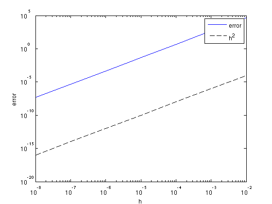

Fast Robust Waveform inversion: functions
The functions specific to this package can be found in the mbin directory.
- twonorms - the two-norm and its derivative.
- Jls - least-squares residual and gradient for given model and observed data.
- mylbfgs - standard L-BFGS with Wolfe linesearch
Contents
Penalty functions
The penalty functions are of the form
\(f(\mathbf{r}) = \sum_i p(r_i)\),
where
\(p(r) = \frac{1}{2}r^2\)
for least-squares, which is implemented in the function twonorms. Other penalties can be implemented in a similar fashion.
Misfit functions for FWI
Based on the above penalty functions, we can calculate the misfit for FWI, given a model \(\mathbf{m}\) and observed data \(\mathbf{d}_i\):
\(J(\mathbf{m}) = \sum_i f(F(\mathbf{m})\mathbf{q}_i - \mathbf{d}_i)\),
where \(F(\mathbf{m})\mathbf{q}_i\) is the modeled data for the \(i\)-th source.
- Jls.m computes the least-squares misfit and gradient
We can test the accuracy of the gradient based on the Taylor series:
\(J(\mathbf{x} + h\Delta \mathbf{x}) = J(\mathbf{x}) + h\nabla J(\mathbf{x})^T\Delta\mathbf{x} + \mathcal(O)(h^2)\)
We can plot the error
\( | J(\mathbf{x}+h\Delta\mathbf{x}) - J(\mathbf{x}) - h\nabla J(\mathbf{x}+h\Delta\mathbf{x})^T\Delta\mathbf{x} | \)
as a function of \(h\) and verify that it decreases as \(h^2\):
% setup some model parameters model.o = [0 0]; model.d = [10 10]; model.n = [51 51]; model.nb = [50 50]; model.freq = [10]; model.f0 = 10; model.t0 = 0.01; model.zsrc = 15; model.xsrc = 0:100:1000; model.zrec = 10; model.xrec = 0:20:1000; % constant velocity 2000 m/s v0 = 2000; m = 1e6/v0.^2*ones(prod(model.n),1); % random perturbation dm = randn(prod(model.n),1); % define point sources and make data Q = speye(length(model.xsrc)); D = F(m,Q,model); % define function-handle for misfit fh = @(x)Jls(x,Q,D,model); % test for range of h h = 10.^[-2:-1:-8]; f0 = fh(m); for k = 1:length(h) [f1, g1] = fh(m + h(k)*dm); e(k) = abs(f1 + h(k)*g1'*dm - f0); end % plot error figure; loglog(h,e,h,h.^2,'k--'); xlabel('h');ylabel('error'); legend('error','h^2');
Alternatively, we can check whether
\(\frac{1}{2}(\nabla J(\mathbf{x}_1 + \nabla J(\mathbf{x}_2))^T(\mathbf{x}_2 - \mathbf{x}_1) = J(\mathbf{x}_2) - J(\mathbf{x_1})\)
for small \( | \mathbf{x}_2 - \mathbf{x}_1 |\).
m1 = m + 1e-3*randn(prod(model.n),1); m2 = m + 1e-3*randn(prod(model.n),1); [f1,g1] = fh(m1); [f2,g2] = fh(m2); .5*(g1 + g2)'*(m2 - m1)/(f2 - f1)
ans =
1.0017
Optimization
Included is a standard L-BFGS with a Wolfe linesearch, mylbfgs.m (cf. [1]).
References%
[1] J. Nocedal and S.J. Wright, 1999. Numerical Optimization. Springer.